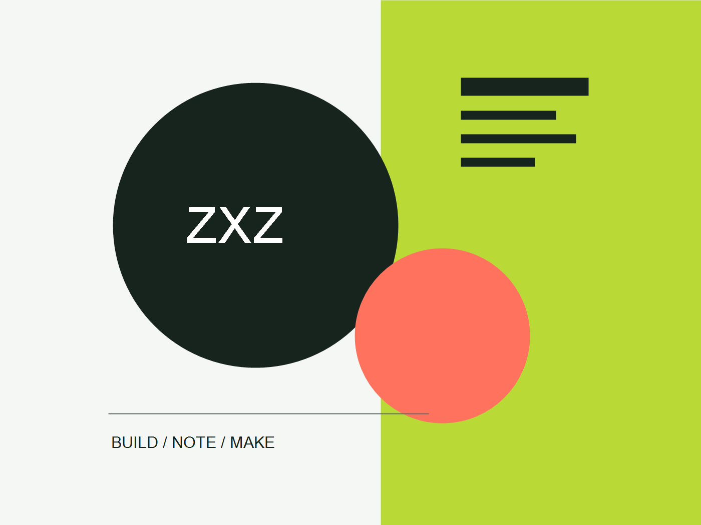

昇腾 310B 开源电子书
面向 Ascend 310B 的开发、调试与实践教材，正文继续由独立站点维护。
阅读独立电子书
这里是周先中的个人站点，主要整理教学资料、研究实践与可复用的学习资源。课程、项目和笔记会在这里逐步沉淀。
OPEN COURSE INDEX
这里整理我在 GitHub 上维护的课程、实验与教材。课程主页优先提供直接阅读入口，源码和更新记录保留在对应仓库。
面向 Ascend 310B 的开发、调试与实践教材，正文继续由独立站点维护。
阅读独立电子书面向初学者的 Python 编程基础课程内容与练习。
查看课程仓库面向初学者的 Python 数据分析课程主页。
从数字系统基础到 FPGA 实践的课程主页与实验资料。
嵌入式系统设计课程资料、代码与实验记录。
查看课程仓库集成电路测试技术课程材料与相关实践。
微电子器件模型、仿真方法与课程实践。
强化学习课程笔记、实验和可复现代码。
查看课程仓库《Introduction to Python for Computational Science and Engineering》中文翻译。
查看课程仓库01
把课程、实验与阅读材料整理为可复用的公开资源。
02
记录模型、代码和实验结果，保持过程可复核。
03
课程与研究资料会按项目进度逐步补充。
SAY HELLO